Remove shape variation associated to external variables
Source:R/shapes_operations.R
detrend_shapes.RdDetrend shape variation using the relationship between shape data and some external explanatory variable(s) (works for both factors and numerics).
detrend_shapes(
model,
xvalue = NULL,
tree = NULL,
method = "orthogonal",
newdata = NULL
)Arguments
- model
A
"mlm"object created usingstats::lm().- xvalue
A value (numeric) or level (character) at which shape data is to be standardized (i.e., centered); If NULL, the mean of the complete sample is used (only available if there is a single explanatory variable).
- tree
A
"phylo"object containing a phylogenetic tree. Tip labels should match row names fromx.- method
Method used for detrending; options are
"orthogonal"(the default) and"residuals"(see details).- newdata
New data to be standardized. It should be provided as either an
"mlm"object fitting the same variables used inmodelmeasured in a new sample, created throughstats::lm(), or a 2-margin matrix of shape descriptors (only formethod = "orthogonal"). See details.
Value
A 2-margins matrix, of dimensions n x (k x p) for the case of
landmark data and n x (4 x nb.h) for the case of Fourier data (where
nb.h is the number of harmonics used in elliptic Fourier analysis).
Details
This function detrends (or standardizes, or corrects) shapes from
variation associated with non-shape variables, using either the residuals
computed from a linear model fitting the former to the latter
(method = "residuals"), or the projection of shapes into a subspace
that is orthogonal to variation associated to non-shape variables, computed
using the Burnaby approach (method = "orthogonal").
If newdata is provided as an "mlm" object, shapes from
newdata are detrended by "correcting" their relationship with the
explanatory variables using the relationship estimated for the data
provided in model ("partial detrending"). Specifically, if
method = "residuals", shape residuals will be computed by
subtracting values fitted to the coefficients from model to the
shapes provided in newdata; whereas if method = "orthogonal",
shapes are projected into the subspace resulting from the subtraction of
the orthogonal subspaces computed for newdata and model.
If method = "orthogonal" and newdata is provided as a
2-margin matrix of shape descriptors, the function will instead return the
new set of shapes, detrended using the relationship estimated for the data
provided in model (i.e., the shapes provided in newdata are
projected directly into the orthogonal subspace computed for the data
provided in model).
The grand mean of the sample of shapes is used by default to center shape
variation, although an xvalue specifying a level or numeric value of
the explanatory variable in model to center shapes at can be
provided. This shift can only be applied for one explanatory variable.
If a phylogenetic tree is supplied for interspecific shape data, the procedure is performed using the phylogenetically-corrected coefficients (and the phylogenetic mean is used instead of the grand mean for re-centering data; see Revell, 2009), assuming a Brownian motion model of evolution.
References
Burnaby, T. P. (1966) Growth-invariant discriminant functions and generalized distances. Biometrics, 22, 96–110.
Revell, L. J. (2009). Size-correction and principal components for interspecific comparative studies. Evolution, 63, 3258-3268.
Klingenberg, C. P. (2016). Size, shape, and form: concepts of allometry in geometric morphometrics. Development Genes and Evolution, 226(3), 113-137.
See also
Examples
#### Landmark data
#load tails data and packages
library(geomorph)
library(Morpho)
data(tails)
shapes <- tails$shapes
species <- tails$data$species
sex <- tails$data$sex
logsizes <- log(tails$sizes)
msp <- mspace(shapes, links = tails$links, points = TRUE)
hulls_by_group_2D(msp$ordination$x, fac = species)
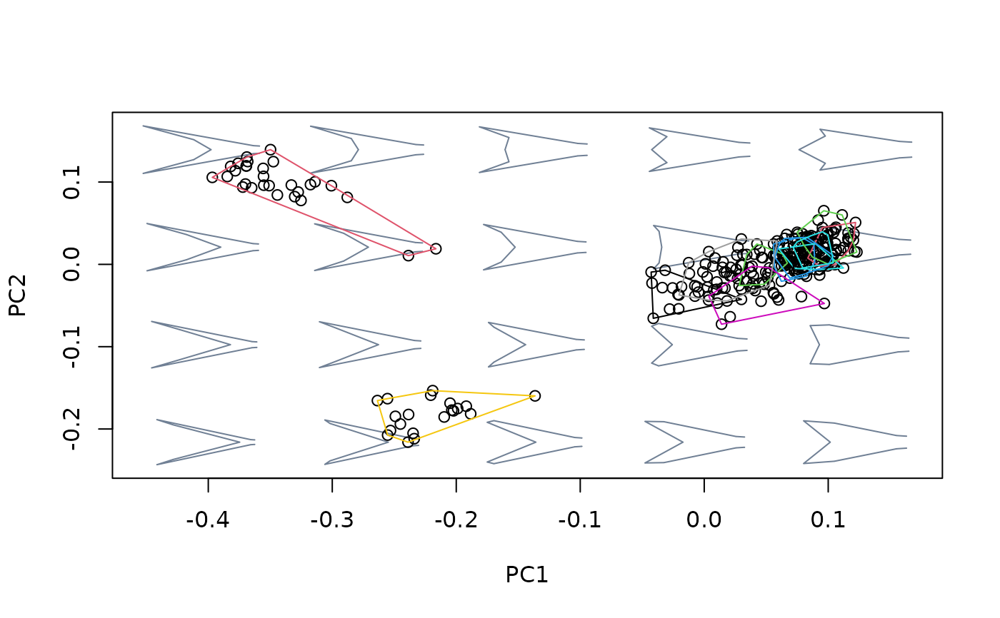
### For numeric variables
#fit linear model between shapes and sizes, then center at the grand mean of
#the sample
model <- lm(two.d.array(shapes) ~ logsizes)
detr_shapes_mat <- detrend_shapes(model)
detr_shapes_nosize <- arrayspecs(detr_shapes_mat, k = 2, p = 9)
msp_nosize <- mspace(detr_shapes_nosize, links = tails$links, points = TRUE)
hulls_by_group_2D(msp_nosize$ordination$x, fac = species)
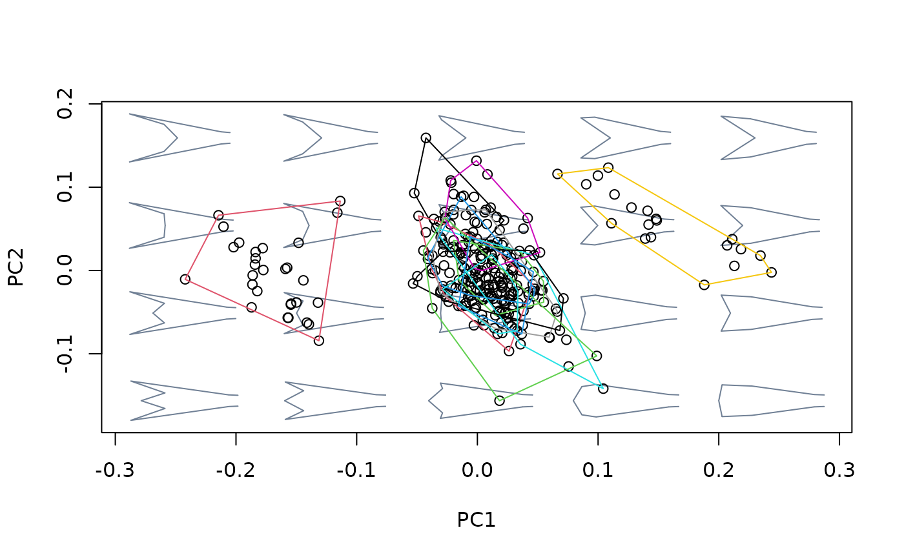
## Using xvalue
#fit linear model between shapes and sizes, then center at the shape
#corresponding to the maximum size of the sample
model <- lm(two.d.array(shapes) ~ logsizes)
detr_shapes_mat2 <- detrend_shapes(model,
xvalue = max(logsizes))
detr_shapes_nosize2 <- arrayspecs(detr_shapes_mat2, k = 2, p = 9)
msp_nosize2 <- mspace(detr_shapes_nosize2, links = tails$links,
points = TRUE)
hulls_by_group_2D(msp_nosize2$ordination$x, fac = species)
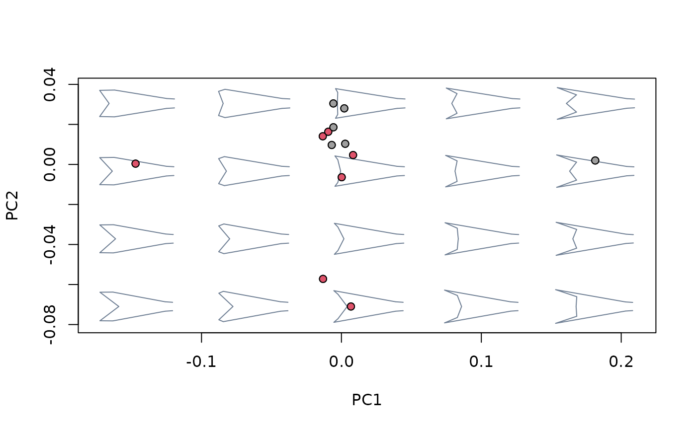
## Using a phylogenetic tree
#fit linear model between shapes and sizes, then center at the shape
#corresponding to the grand size of the sample
sp_shapes <- expected_shapes(shapes, species)
sp_logsizes <- c(tapply(logsizes, species, mean))
model <- lm(two.d.array(sp_shapes) ~ sp_logsizes)
detr_shapes_mat1 <- detrend_shapes(model)
detr_shapes_nosize1 <- arrayspecs(detr_shapes_mat1, k = 2, p = 9)
msp_nosize1 <- mspace(detr_shapes_nosize1, links = tails$links,
points = TRUE)
points(msp_nosize1$ordination$x, pch = 21, bg = c(1:13))
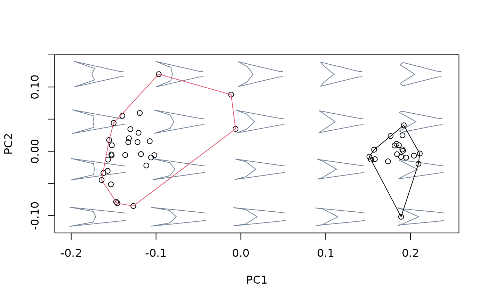
## Using newdata
#fit linear model between shapes and sizes for NDF species, then use the NDF
#allometry to detrend DF shapes from allometric variation (just for
#illustration, not implying this makes any sense)
index <- tails$data$type == "NDF"
shapes_ndf <- shapes[,,index]
logsizes_ndf <- logsizes[index]
shapes_df <- shapes[,,!index]
logsizes_df <- logsizes[!index]
model_ndf <- lm(two.d.array(shapes_ndf) ~ logsizes_ndf)
model_df <- lm(two.d.array(shapes_df) ~ logsizes_df)
detr_shapes_mat3 <- detrend_shapes(model_ndf, newdata = model_df)
detr_shapes_nosize3 <- arrayspecs(detr_shapes_mat3, k = 2, p = 9)
msp_nosize3 <- mspace(detr_shapes_nosize3, links = tails$links,
points = TRUE)
hulls_by_group_2D(msp_nosize3$ordination$x, fac = factor(species[!index]))
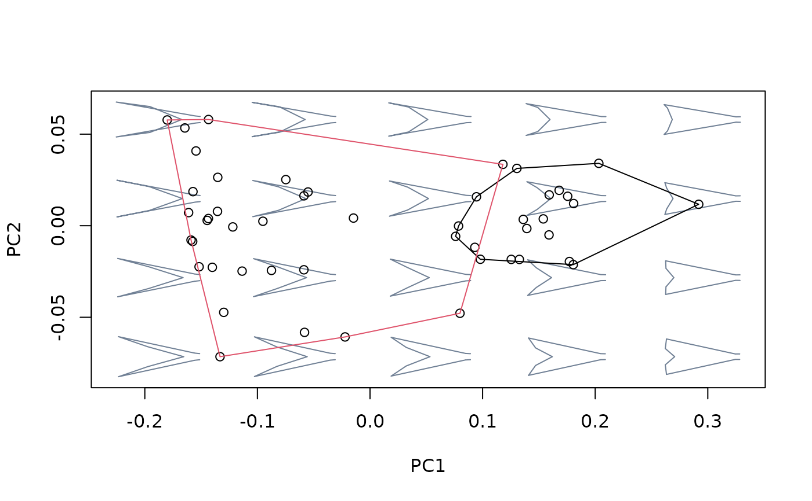
### For factors
#load wings data
data(wings)
shapes <- wings$shapes
cactus <- wings$data$cactus
sex <- wings$data$sex
species <- wings$data$species
msp <- mspace(shapes, template = wings$template, points = TRUE)
hulls_by_group_2D(msp$ordination$x, fac = cactus)
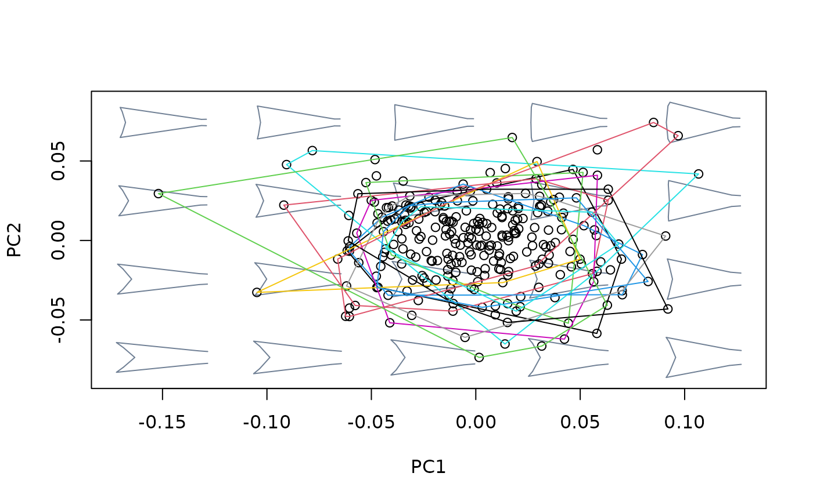
#fit linear model between shapes and sex, then center at the grand mean
#of the sample.
model <- lm(two.d.array(shapes) ~ cactus)
detr_shapes_mat <- detrend_shapes(model)
detr_shapes_nocac <- arrayspecs(detr_shapes_mat, k = 2, p = 9)
msp_nocac <- mspace(detr_shapes_nocac, template = wings$template,
points = TRUE)
hulls_by_group_2D(msp_nocac$ordination$x, fac = cactus)
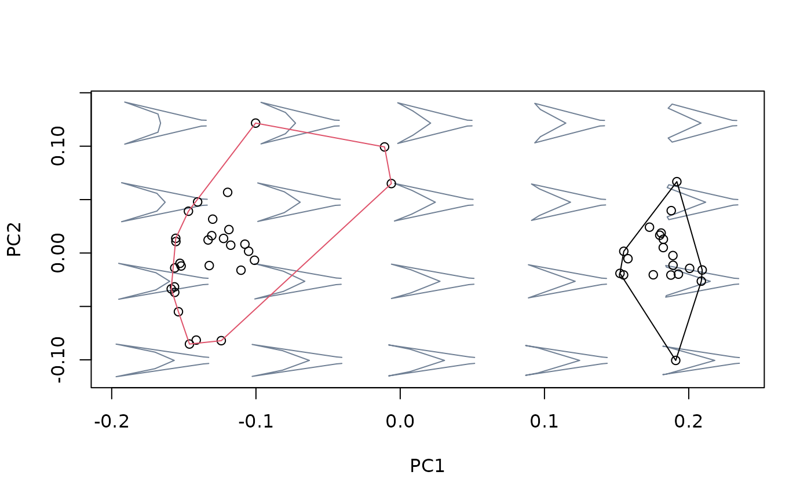
## Using xvalue
#fit linear model between shapes and species, then center at the shape
#corresponding to the mean shape of T. savana
model <- lm(two.d.array(shapes) ~ cactus)
detr_shapes_mat <- detrend_shapes(model, xvalue = "Tr")
detr_shapes_nocac2 <- arrayspecs(detr_shapes_mat, k = 2, p = 9)
msp_nocac2 <- mspace(detr_shapes_nocac2, template = wings$template,
points = TRUE)
hulls_by_group_2D(msp_nocac2$ordination$x, fac = cactus)
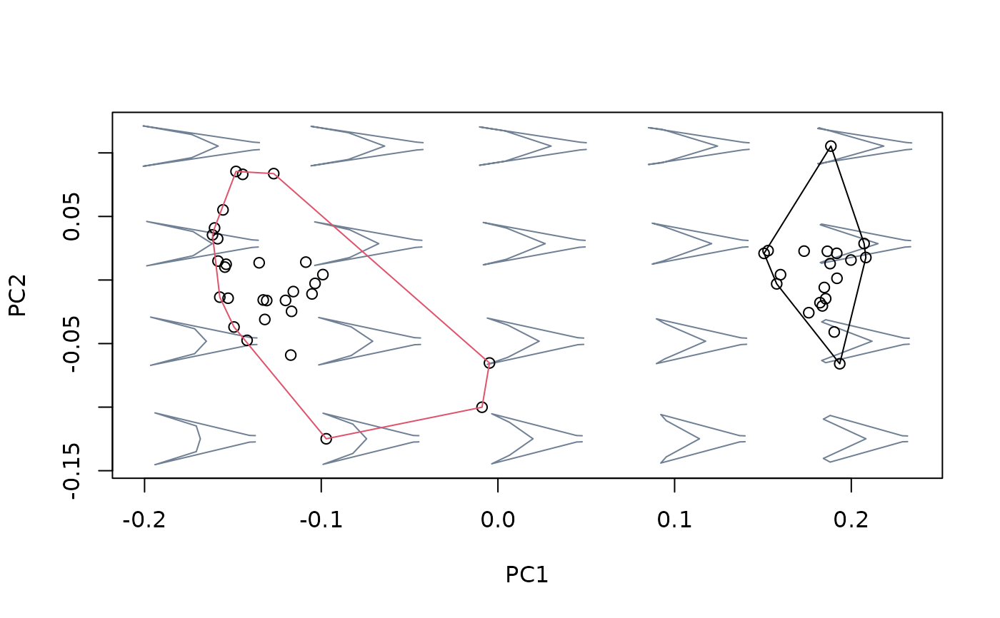
## Using newdata
#fit linear model between shapes and cactus for Db species, then use this
#relationship to detrend Dk shapes from variation between cactus
index <- species == "Db"
shapes_Db <- shapes[,,index]
cactus_Db <- cactus[index]
shapes_Dk <- shapes[,,!index]
cactus_Dk <- cactus[!index]
model_Db <- lm(two.d.array(shapes_Db) ~ cactus_Db)
model_Dk <- lm(two.d.array(shapes_Dk) ~ cactus_Dk)
detr_shapes_mat3 <- detrend_shapes(model_Db, newdata = model_Dk)
detr_shapes_nocactus <- arrayspecs(detr_shapes_mat3, k = 2, p = 9)
msp_cactus <- mspace(shapes_Dk, template = wings$template, points = TRUE)
hulls_by_group_2D(msp_cactus$ordination$x, fac = factor(cactus[!index]))
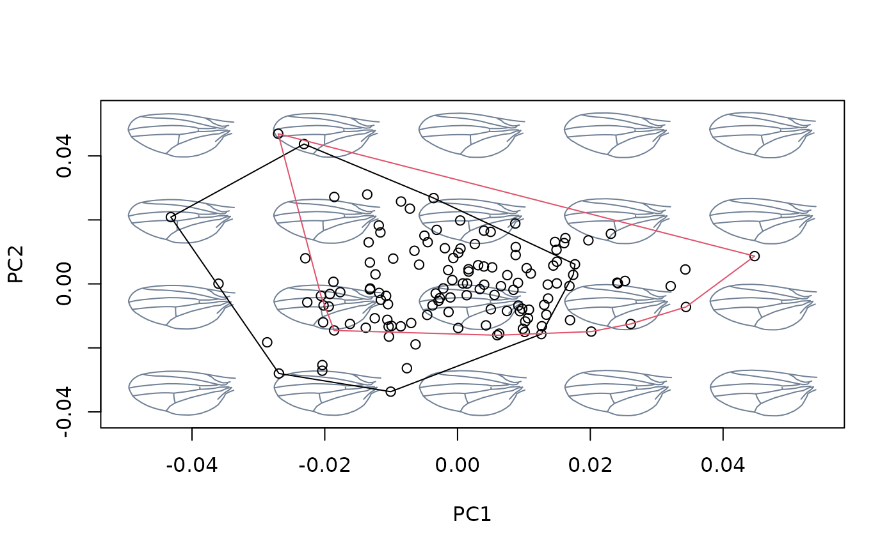
msp_nocactus <- mspace(detr_shapes_nocactus, template = wings$template,
points = TRUE)
hulls_by_group_2D(msp_nocactus$ordination$x, fac = factor(cactus[!index]))
 ### Comparing residuals vs orthogonal methods
if (FALSE) {
#load shells3D data, retain only specimens belonging to S. vacaensis
data("shells3D")
index <- species == levels(species)[7]
shapes <- shells3D$shapes
refmesh <- shells3D$mesh_meanspec
species <- shells3D$data$species
sizes <- log(shells3D$sizes)
template <- Morpho::tps3d(x = refmesh,
refmat = shapes[,,findMeanSpec(shapes)],
tarmat = expected_shapes(shapes[,,index]))
#compute allometric axis (i.e., shape variation associated to changes in
#size)
alloax <- lm(two.d.array(shapes[,,index]) ~ sizes[index])
#project vacaensis specimens into the overall morphospace together with
#allometric axis
mspace(shapes, template = template, bg.models = "gray",
cex.ldm = 0, alpha.models = 0.7, adj_frame = c(0.93,0.93)) %>%
proj_shapes(shapes[,,index], pch = 21, bg = 7) %>%
proj_axis(alloax, type = 2, lwd = 2, lty = 1)
#compute non-allometric variation using linear models (center on the shape
#corresponding to the maximum size)
detr_shapes_lm <- lm(two.d.array(shapes[,,index]) ~ sizes[index]) %>%
detrend_shapes(method = "residuals", xvalue = max(sizes[index])) %>%
arrayspecs(k = 3, p = 90)
#visualize
mspace(shapes, template = template, bg.models = "gray",
cex.ldm = 0, alpha.models = 0.7, adj_frame = c(0.93,0.93)) %>%
proj_shapes(shapes[,,index], pch = 1, col = 7) %>%
proj_axis(alloax, type = 2, lwd = 2, lty = 1) %>%
proj_shapes(detr_shapes_lm, pch = 21, bg = 7)
#compute non-allometric variation using a orthogonal subspace (center on the
#shape corresponding to the maximum size)
detr_shapes_os <- lm(two.d.array(shapes[,,index]) ~ sizes[index]) %>%
detrend_shapes(method = "orthogonal", xvalue = max(sizes[index])) %>%
arrayspecs(k = 3, p = 90)
#visualize
mspace(shapes, template = template, bg.models = "gray",
cex.ldm = 0, alpha.models = 0.7, adj_frame = c(0.93,0.93)) %>%
proj_shapes(shapes[,,index], pch = 1, col = 7) %>%
proj_axis(alloax, type = 2, lwd = 2, lty = 1) %>%
proj_shapes(detr_shapes_os, pch = 21, bg = 7)
}
#### Fourier data (quick demo)
#load shells data
data(shells)
shapes <- shells$shapes$coe
species <- shells$data$species
logsizes <- log(shells$sizes)
msp <- mspace(shapes, mag = 0.5, points = TRUE)
hulls_by_group_2D(msp$ordination$x, fac = species)
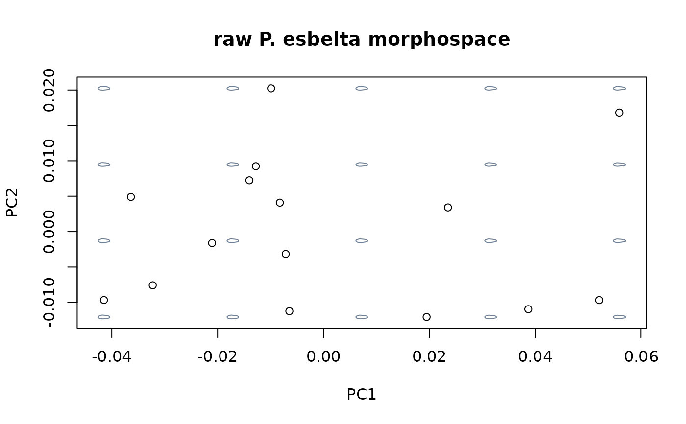
#fit linear model between shapes and sizes, then center at the shape
#corresponding to the grand mean
model <- lm(shapes ~ logsizes)
detr_shapes_nosize <- detrend_shapes(model)
msp_nosize <- mspace(detr_shapes_nosize, mag = 0.5, points = TRUE)
hulls_by_group_2D(msp_nosize$ordination$x, fac = species)
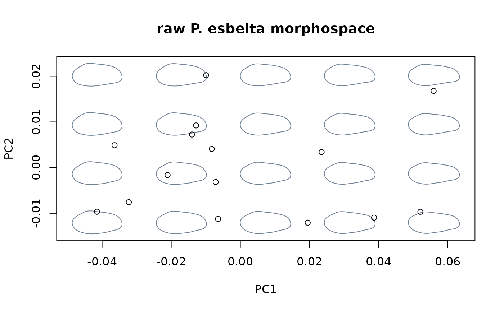
#fit linear model between shapes and sizes, then center at the shape
#corresponding to the maximum size
model <- lm(shapes ~ logsizes)
detr_shapes_nosize2 <- detrend_shapes(model,
xvalue = max(logsizes))
msp_nosize2 <- mspace(detr_shapes_nosize2, mag = 0.5, points = TRUE)
hulls_by_group_2D(msp_nosize2$ordination$x, fac = species)
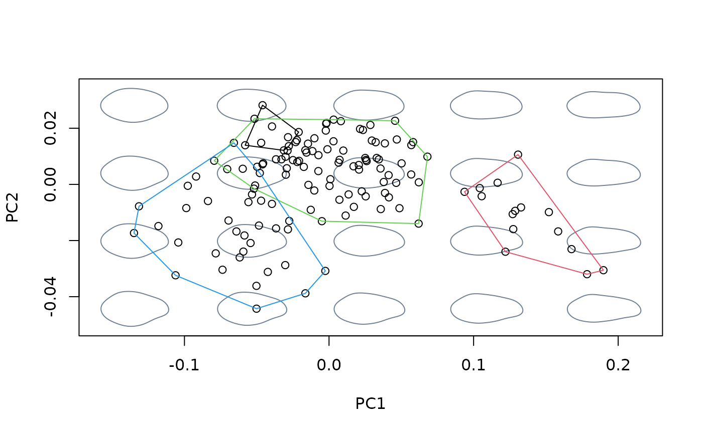
#fit linear model between shapes and sizes, then center at the maximum size
shapes_koeneni <- shapes[species == "koeneni",]
logsizes_koeneni <- logsizes[species == "koeneni"]
shapes_esbelta <- shapes[species == "esbelta",]
logsizes_esbelta <- logsizes[species == "esbelta"]
model_koeneni <- lm(shapes_koeneni ~ logsizes_koeneni)
model_esbelta <- lm(shapes_esbelta ~ logsizes_esbelta)
detr_shapes_nosize3 <- detrend_shapes(model_koeneni,
newdata = model_esbelta)
msp_nosize3 <- mspace(shapes_esbelta, mag = 0.5, points = TRUE)
title("raw P. esbelta morphospace")
msp_nosize4 <- mspace(detr_shapes_nosize3, mag = 0.5, points = TRUE)
title("P. esbelta morphospace, refined using \n allometric variation from P. koeneni")
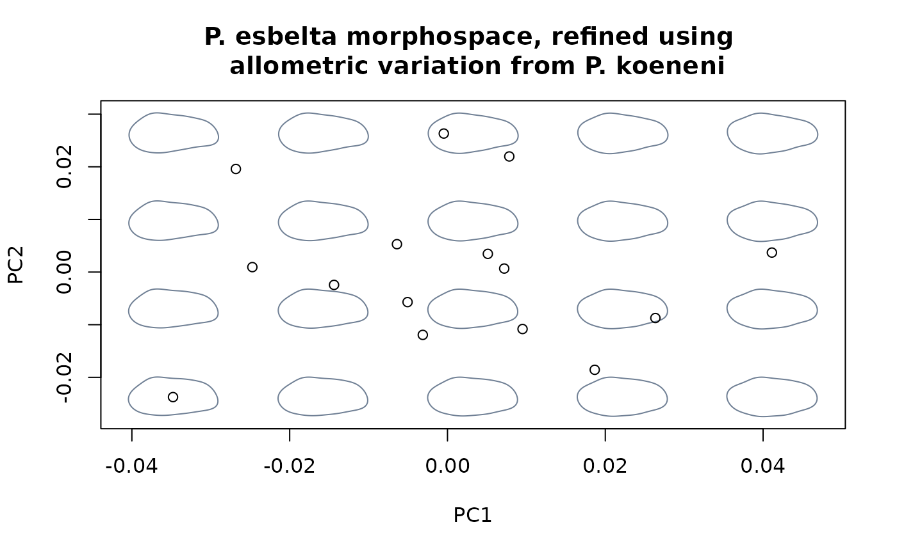
### Comparing residuals vs orthogonal methods
if (FALSE) {
#load shells3D data, retain only specimens belonging to S. vacaensis
data("shells3D")
index <- species == levels(species)[7]
shapes <- shells3D$shapes
refmesh <- shells3D$mesh_meanspec
species <- shells3D$data$species
sizes <- log(shells3D$sizes)
template <- Morpho::tps3d(x = refmesh,
refmat = shapes[,,findMeanSpec(shapes)],
tarmat = expected_shapes(shapes[,,index]))
#compute allometric axis (i.e., shape variation associated to changes in
#size)
alloax <- lm(two.d.array(shapes[,,index]) ~ sizes[index])
#project vacaensis specimens into the overall morphospace together with
#allometric axis
mspace(shapes, template = template, bg.models = "gray",
cex.ldm = 0, alpha.models = 0.7, adj_frame = c(0.93,0.93)) %>%
proj_shapes(shapes[,,index], pch = 21, bg = 7) %>%
proj_axis(alloax, type = 2, lwd = 2, lty = 1)
#compute non-allometric variation using linear models (center on the shape
#corresponding to the maximum size)
detr_shapes_lm <- lm(two.d.array(shapes[,,index]) ~ sizes[index]) %>%
detrend_shapes(method = "residuals", xvalue = max(sizes[index])) %>%
arrayspecs(k = 3, p = 90)
#visualize
mspace(shapes, template = template, bg.models = "gray",
cex.ldm = 0, alpha.models = 0.7, adj_frame = c(0.93,0.93)) %>%
proj_shapes(shapes[,,index], pch = 1, col = 7) %>%
proj_axis(alloax, type = 2, lwd = 2, lty = 1) %>%
proj_shapes(detr_shapes_lm, pch = 21, bg = 7)
#compute non-allometric variation using a orthogonal subspace (center on the
#shape corresponding to the maximum size)
detr_shapes_os <- lm(two.d.array(shapes[,,index]) ~ sizes[index]) %>%
detrend_shapes(method = "orthogonal", xvalue = max(sizes[index])) %>%
arrayspecs(k = 3, p = 90)
#visualize
mspace(shapes, template = template, bg.models = "gray",
cex.ldm = 0, alpha.models = 0.7, adj_frame = c(0.93,0.93)) %>%
proj_shapes(shapes[,,index], pch = 1, col = 7) %>%
proj_axis(alloax, type = 2, lwd = 2, lty = 1) %>%
proj_shapes(detr_shapes_os, pch = 21, bg = 7)
}
#### Fourier data (quick demo)
#load shells data
data(shells)
shapes <- shells$shapes$coe
species <- shells$data$species
logsizes <- log(shells$sizes)
msp <- mspace(shapes, mag = 0.5, points = TRUE)
hulls_by_group_2D(msp$ordination$x, fac = species)
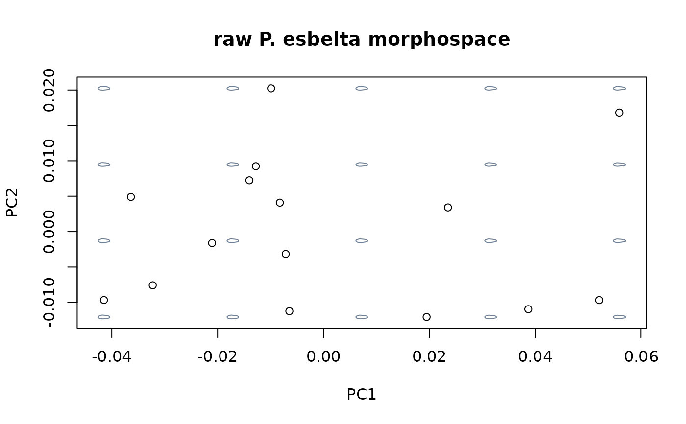
#fit linear model between shapes and sizes, then center at the shape
#corresponding to the grand mean
model <- lm(shapes ~ logsizes)
detr_shapes_nosize <- detrend_shapes(model)
msp_nosize <- mspace(detr_shapes_nosize, mag = 0.5, points = TRUE)
hulls_by_group_2D(msp_nosize$ordination$x, fac = species)
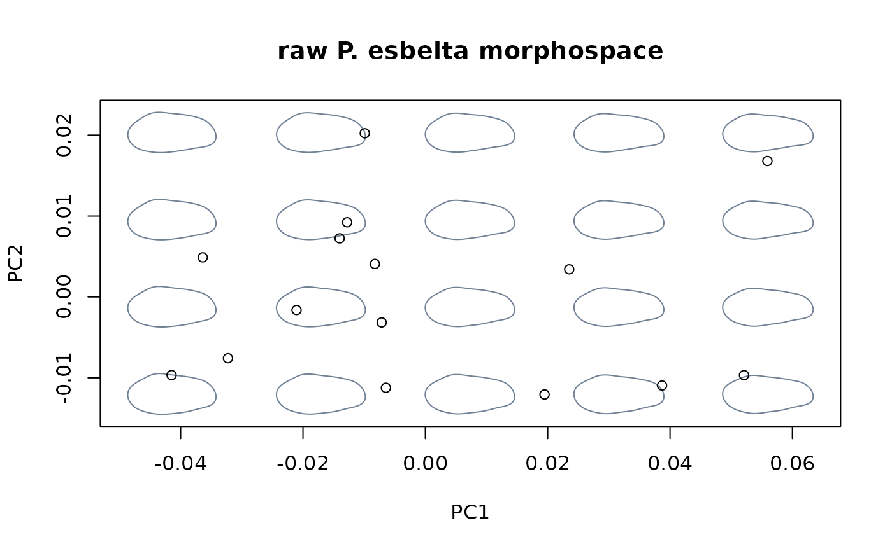
#fit linear model between shapes and sizes, then center at the shape
#corresponding to the maximum size
model <- lm(shapes ~ logsizes)
detr_shapes_nosize2 <- detrend_shapes(model,
xvalue = max(logsizes))
msp_nosize2 <- mspace(detr_shapes_nosize2, mag = 0.5, points = TRUE)
hulls_by_group_2D(msp_nosize2$ordination$x, fac = species)
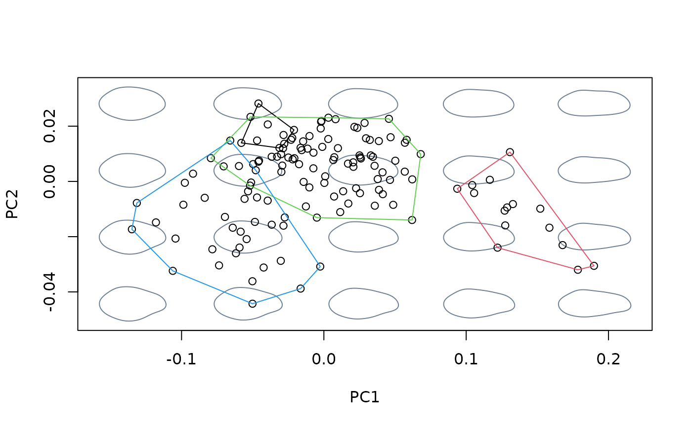
#fit linear model between shapes and sizes, then center at the maximum size
shapes_koeneni <- shapes[species == "koeneni",]
logsizes_koeneni <- logsizes[species == "koeneni"]
shapes_esbelta <- shapes[species == "esbelta",]
logsizes_esbelta <- logsizes[species == "esbelta"]
model_koeneni <- lm(shapes_koeneni ~ logsizes_koeneni)
model_esbelta <- lm(shapes_esbelta ~ logsizes_esbelta)
detr_shapes_nosize3 <- detrend_shapes(model_koeneni,
newdata = model_esbelta)
msp_nosize3 <- mspace(shapes_esbelta, mag = 0.5, points = TRUE)
title("raw P. esbelta morphospace")
msp_nosize4 <- mspace(detr_shapes_nosize3, mag = 0.5, points = TRUE)
title("P. esbelta morphospace, refined using \n allometric variation from P. koeneni")
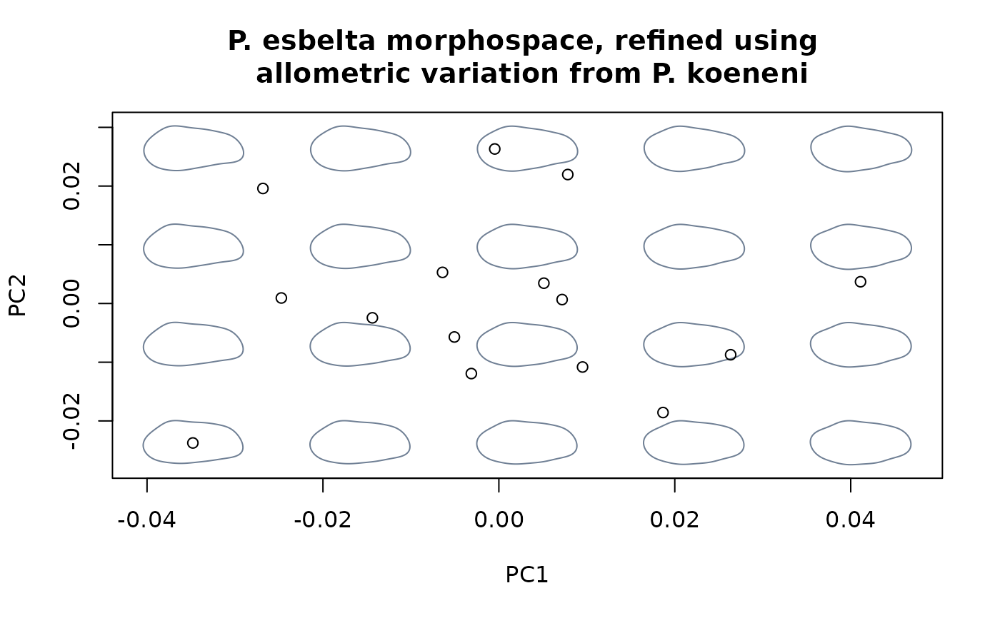